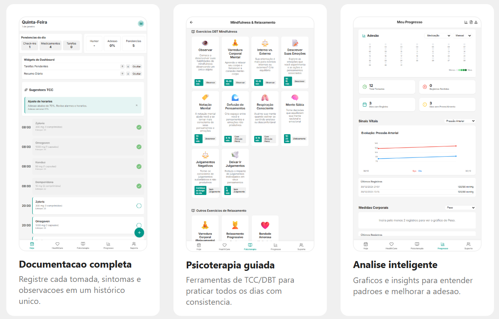
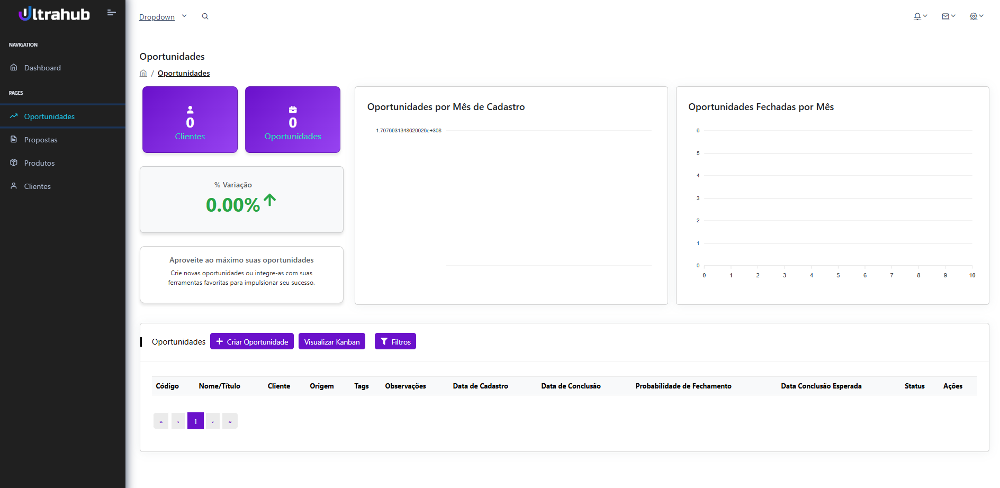
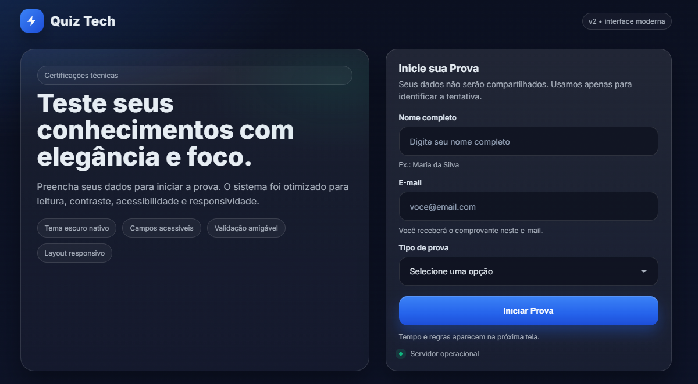
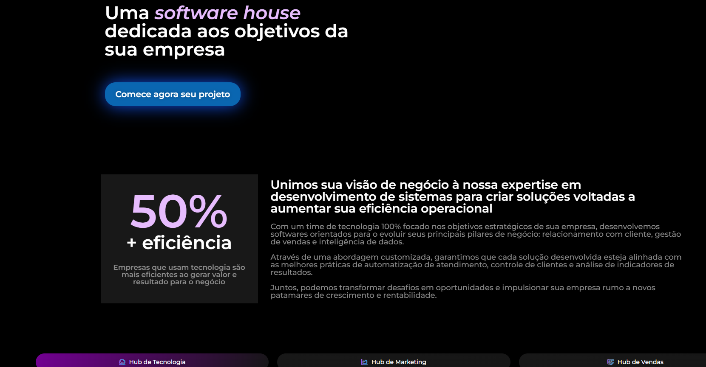

Web, Dados e Automação com disciplina operacional
Profissional com mais de 10 anos em infraestrutura, monitoramento e automação em ambientes corporativos (setor financeiro). Atuação com análise de dados/BI, observabilidade e rotinas 24x7 — e, mais recentemente, desenvolvimento web full stack. Ao longo da minha trajetória, desenvolvi competências em análise de dados, criação de dashboards e relatórios de performance, automação de processos e gestão de ambientes críticos 24x7. Possuo experiência na implementação de soluções de monitoramento e observabilidade, com histórico em empresas como F1RST Digital Service (Santander), Global Hitss e projetos de outsourcing para grandes corporações como Via Varejo e FCA. Domino ferramentas como Power BI, Python, SQL, Dynatrace, Grafana, ServiceNow e Control-M, aplicadas na construção de pipelines de dados, modelagem dimensional e desenvolvimento de automações que reduziram significativamente o tempo de execução de rotinas operacionais. Possuo certificações em ITIL V4, COBIT 5 e SRE Practitioner, complementadas por formações em Business Intelligence, Data Science e Cybersecurity. Atualmente busco aplicar minha expertise técnica combinada com conhecimentos em infraestrutura e habilidades em análise de dados, ETL e desenvolvimento de soluções que agregam valor ao negócio.
O que eu faço
- Observabilidade
- Monitoramento de Sistemas
- Análise de Dados
- Business Intelligence
- Full Stack Web
- SQL
- Automatização de Processos
- Python
- Power BI
- DevOps/SRE
- ETL
- Data Visualization
- R
- PowerShell
- Control-M
- Dynatrace
- Grafana
- Kibana
- ServiceNow
- ITIL
- COBIT
- Cloud Computing
- AWS
- Azure
- Gestão de Incidentes
- MTTR
- MTTA
- SLO
- Dashboard Development
- Data Modeling
- DAX
- Power Query
- Reporting Services
- Integration Services
- NoSQL
- Active Directory
- Middleware
- Scripts RPA
- PowerAutomate
- Git
- Docker
- Linux
- Windows Server
Impacto
Resultados em ambiente bancário crítico: redução de toil, melhoria de visibilidade e operação 24x7.
-72% de toil operacional
Automações com Python, PowerShell e PowerAutomate reduziram o tempo de execução de rotinas operacionais do Consignado Santander.
Dashboards e redução de MTTR
Painéis em Power BI para saúde do ambiente e tendências, reduzindo MTTR em classes recorrentes.
Escala operacional (N1/N2)
Absorção de rotinas, critérios de entrada, gestão de POPs e treinamento de equipes; menos handoffs no ServiceNow.
Observabilidade
- Administração/otimização Dynatrace e Grafana
- Análises de latência, erro e tráfego; detecção proativa
Deploy e operação
- Ciclo de deploy: CloudBees, Rundeck, Ansible, Docker, Liquibase
- Middleware/console: Gravity, filas MQ, WAS/Tomcat/JBoss
Experiência (linha do tempo)
Trajetória 2011–2025: suporte → liderança NOC → SRE/Observabilidade → Full Stack (autônomo).
- Desenvolvimento ponta-a-ponta (produto, arquitetura, front, back, banco, testes, deploy e operação).
- Deveriar (PWA Saúde/TCC): React 19 + Vite PWA + TypeScript; Fastify 4 + TS; Firestore + PostgreSQL (Cloud SQL); Cloud Run + Vercel; GitHub Actions.
- Segurança e integrações: Google OAuth, CSRF, sessão via cookies httpOnly; Google APIs (Drive AppData), Vision OCR; billing com Stripe e suporte a IAP (Apple/Google).
- Produtos paralelos: UltraHub CRM (Node.js/React/MongoDB), Quiz Tech (GitHub Pages), extensões Chrome (Manifest V3) e pipeline OCR em Python (FastAPI).
- IA Analítica (arquitetura): orquestração Node/Fastify + OpenAPI, governança OPA/Rego, Trino, Keycloak (OIDC/LDAP/AD) e Evidence Service em Go + Postgres (planejado).
- Observabilidade: Dynatrace/Grafana; análises de métricas (latência/erro/tráfego) e detecção proativa.
- Automação: Python/PowerShell/PowerAutomate + Control-M (RPA) para reduzir toil.
- Power BI: modelagem estrela, DAX (MTTR/MTTA/SLO), tendências por serviço e horário.
- Deploy: CloudBees, Rundeck, Ansible, Docker, Liquibase (validação e evidências pós-deploy).
- Tratamento de alertas (N1/N2): Dynatrace, Splunk, Grafana, Kibana; correlação CPU/memória/disco/latência.
- Análise de logs/traces/exceptions (Tomcat, JBoss, WebSphere, WebLogic) e troubleshooting ponta a ponta.
- Verificação de saúde em AWS/Azure (quotas, IAM, filas, latências) e painéis analíticos em Power BI.
- Coordenação de times 24x7 e handoffs padronizados (BH/RJ/SP).
- Gestão de incidentes críticos: war rooms, timelines, lições aprendidas e redução de MTTR.
- Processos e documentação (POPs/fluxos) + relatórios gerenciais (SLA/MTTR/volumetria).
Competências (core)
Foco em observabilidade, dados e automação — com base sólida em operação crítica.
Observabilidade / Monitoramento
Dynatrace, Grafana, Kibana/Splunk; métricas, alertas, troubleshooting e operação 24x7.
Dados / BI
Power BI, modelagem dimensional, DAX, ETL/ELT e indicadores (MTTR/MTTA/SLO).
Automação / DevOps
Python, PowerShell, PowerAutomate, Control-M; deploy/ops com Docker e automação de rotinas.
Stack (resumo)
Web: React • TypeScript • Vite • Fastify • PostgreSQL • Firestore • OAuth/CSRF • Stripe • Playwright. Cloud/Deploy: Cloud Run • Cloud SQL • Vercel • GitHub Actions. Ops: Dynatrace • Grafana • ServiceNow • Control-M • Docker.
Full Stack (autônomo)
Produto + engenharia: front/back, integrações, segurança, observabilidade e pipelines (03/2025–atual).
Formação & Certificações
Formação
- Gestão de Tecnologia da Informação — UniBH (conclusão 2014)
Certificações (destaque)
- ITIL 4 Foundations
- COBIT 5 Foundations
- SRE Practitioner (DevOps Institute)
- Oracle Cloud Infrastructure Foundations
- Scrum Foundations
Cursos
- Formação Alura - Power BI: modelagem dimensional, DAX e indicadores (MTTR/MTTA/SLO).
- Formação Alura - Python: automação, ETL/ELT, APIs e validação de dados.
- Formação Alura - Web: TypeScript, React, consumo de APIs e testes (E2E).
- Jornada Business Intelligence: queries analíticas, modelagem e otimização básica.
- Formação Alura - DevOps/Cloud: Docker, pipelines CI/CD e deploy (GCP/Vercel).
- Bootcamp Analista Cybersecurity: fundamentos (OAuth, CSRF, sessões/cookies, rate limiting).
Projetos
Conteúdo enxuto, orientado a prova: o que é, qual problema resolve, como foi construído.
Deveriar
PWA para saúde e psicoterapia (TCC/DBT): medicamentos, sinais vitais, sintomas, exercícios guiados e histórico.
React 19 • Vite PWA • Fastify • Firestore • PostgreSQL • Cloud Run • Vercel • Stripe
Prints do app: documentação, psicoterapia guiada e análise/insights.UltraHub CRM
CRM com Oportunidades, Propostas, Clientes, Produtos e Dashboard (em evolução; repo fechado).
Node.js • React • Bootstrap • MongoDB
Print da tela de Oportunidade com dashboards.Quiz Tech
Plataforma de quizzes para certificações técnicas (UI moderna, acessibilidade e foco em leitura/contraste).
GitHub Pages • Front-end Web • UX/UI
Print da tela inicial e formulário de início de prova.Landing corporativa-tech
Página institucional com estética corporativa-tech (apresentação de proposta, CTA e seções de valor).
HTML/CSS • Layout responsivo • Design system simples
Print de seção “hero” e bloco de proposta de valor.Contato
Canal recomendado: LinkedIn. PDFs anexos no site para leitura rápida.

Contato
Problema → Solução → Prova/Impacto
- Triagem e evolução terapêutica fragmentadas e manuais → App Deveriar centraliza sessões, convites e planos com fluxos guiados e consentimentos → 1.500 usuários ativos, 35% menos tempo em tarefas administrativas (~40 min/semana por terapeuta).
- Baixa confiabilidade em registros sensíveis e compliance → Dados com E2EE + Firestore com coleções por usuário e age gate → 0 incidentes de vazamento reportados, custo médio de storage < US$ 0,02/usuário/mês.
- Experiência lenta na captura e análise de conteúdo → Backend Fastify + fila para Vision API com cache → latência mediana 280 ms nas rotas críticas, 22% menos retries.
Métricas (snapshot)
Arquitetura (resumo)
Dados ficam em Firestore com coleções por userId e registros auditáveis; autenticação via Firebase Auth com criptografia ponta-a-ponta e sincronização opcional com Google Drive; deploy em stack web padrão (Vite para o frontend e Node/Fastify para o backend), com logs estruturados via Pino, métricas de latência/erros por endpoint e rastreamento de fluxos críticos para convites e billing.
Problema → Solução → Prova/Impacto
- Equipes comerciais dispersas e sem visibilidade do funil → Centralizar oportunidades, propostas e clientes com pipeline e dashboard → Redução de tempo em follow-ups (~35%) e economia estimada de ~2h/semana por vendedor.
- Criação de propostas manual e lenta → Catálogo de produtos + templates e geração rápida de propostas → ~45% menos tempo para gerar propostas e redução de custo operacional em ~20% no time comercial.
- Dados inconsistentes e baixa confiabilidade nos relatórios → Cadastro único com validações e métricas no dashboard → Latência média de leitura <250ms no dashboard e aumento de ~30% na taxa de conversão acompanhada por etapas.
Métricas (snapshot)
Arquitetura (resumo)
Dados do CRM são persistidos no MongoDB com coleções separadas por entidades (oportunidades, propostas, clientes e produtos), acessados por uma API Node.js; autenticação via JWT e controle de sessão no frontend React; deploy dividido entre backend e frontend (ex.: VPS/containers) com variáveis de ambiente para URLs e segredo; observabilidade com logs estruturados, métricas básicas (latência, erros, throughput) e alertas simples para quedas de API.
Problema → Solução → Prova/Impacto
- Estudo para certificações fica fragmentado (PDF/planilha/anotações), sem "simulado" consistente nem controle de regras/tempo → PWA de quiz com múltiplos exames (AWS/COBIT/ITIL 4/AZ-900), seleção guiada de grupos e timer com pausa/retomada → simulado configurável de até 75 questões (3×25) por sessão e 30 min por conjunto, com feedback imediato e fluxo dedicado (início → grupos → prova).
- Quizzes "caseiros" tendem a ser ruins de usar (alerts, pouca acessibilidade, fricção em mobile/teclado), o que reduz adesão → UI responsiva, modais no lugar de alert(), acessibilidade com navegação por teclado/ARIA, e testes automatizados de acessibilidade → o projeto declara foco em WCAG AA, teclado completo e validações acessíveis; há pipeline de testes incluindo Cypress (E2E) e axe-core (a11y).
- Sem histórico e evidência, fica difícil medir evolução e atacar pontos fracos (e compartilhar resultado) → histórico de tentativas + estatísticas por tópico + modo de revisão (erros) e exportação para PDF → histórico e "banco de dados" são locais (IndexedDB, com fallback localStorage), com exportação em PDF (jsPDF) e revisão focada em erros.
Métricas (snapshot)
Arquitetura (resumo)
Aplicação 100% front-end (HTML/CSS/JS) com páginas dedicadas (index.html, select-groups.html, quiz.html, history.html, review.html) e modo PWA (manifest + service worker). Os dados (usuários, tentativas, resultados) persistem no navegador via IndexedDB com fallback para localStorage; a autenticação é "básica"/local (identificação por nome/e-mail e controle de acesso à rota do quiz), sem depender de backend. O deploy é estático em GitHub Pages (munizmath.github.io), mantendo custo praticamente nulo. A observabilidade é centrada em qualidade preventiva: testes E2E (Cypress), testes de acessibilidade (axe-core) e validações/controles (ex.: prevenção de XSS, validação de entrada) — sem telemetria centralizada por padrão.
Problema → Solução → Prova/Impacto
TODO: cole aqui seus 3 bullets.
Métricas
TODO: performance (Lighthouse), tempo de carregamento, etc.
Arquitetura (resumo)
TODO: HTML/CSS, deploy, assets, cache, etc.